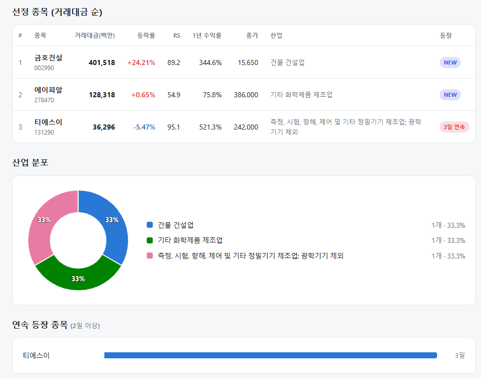
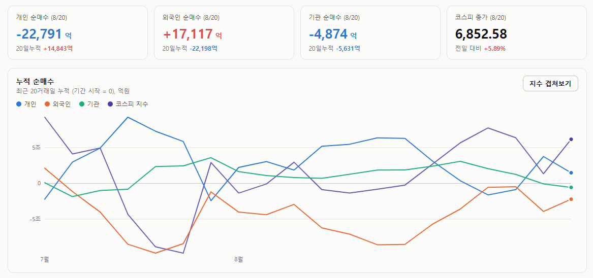
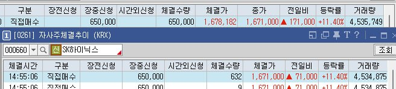

매일의 주도주 정리를 위해 기록합니다.
연속적으로 나온 종목들 또는 상승 후 조정받는 종목 위주로 리서치 해보시면 좋을 것 같습니다.

*오늘 퀀트픽은 없습니다.
연속종목으로 티에스이(3회) 출현했습니다.
#주도섹터
반도체 메가 캡 및 비철금속·귀금속 (외인 1.7조 유입 및 원자재 강세)
주요 종목: SK하이닉스(+12.93%), 삼성전자(+9.90%), 엔투텍(+29.98% 상한가), 아이티센글로벌(+22.90%), 국일신동(+11.46%), 고려아연(+8.12%).
분석: 반도체와반도체장비 업종이 +10.51%, 귀금속 테마가 +9.00%, 비철금속 업종이 +6.35% 상승했습니다. 글로벌 IB의 목표가 상향과 수급 집중에 힘입어 SK하이닉스가 +12.93%, 삼성전자가 +9.90% 폭등하며 지수 상승을 주도했습니다. 고려아연(+8.12%)과 국일신동(+11.46%) 등 비철·귀금속 밸류체인으로도 매수세가 확산되었습니다.
바이오·제약 및 모더나·신규상장 (기술수출 및 파이프라인 랠리)
주요 종목: 소마젠(+29.98% 상한가), 인제니아테라퓨틱스(+30.00% 상한가), 나이벡(+19.82%), 알지노믹스(+16.46%), 레메디(+15.33%), 알테오젠(+11.70%), 에스티팜(+11.28%), 지아이이노베이션(+11.04%), 바이넥스(+8.37%).
분석: 모더나 테마가 +13.57%, 2026 하반기 신규상장 테마가 +10.77% 상승했습니다. 소마젠과 인제니아테라퓨틱스가 상한가를 기록했고, 알테오젠(+11.70%) 및 에스티팜(+11.28%) 등 코스닥 플랫폼/CDMO 바이오 대형주로 대규모 유동성이 유입되었습니다.
#조정섹터
일부 개별 바이오
주요 종목: 에이프릴바이오(-18.82%)
분석: 지수 폭등 장세 속에서도 개별 파이프라인 우려가 출회된 에이프릴바이오(-18.82%)가 급락했습니다.
#수급동향

코스피 지수는 +5.89% 급등한 6,852.58로 마감했습니다. 대형주 중심의 코스피 200 지수 역시 +6.75% 상승한 1,080.98을 기록했습니다. 코스닥 지수는 +1.99% 상승한 840.89로 장을 마쳤습니다.
유가증권시장에서 외국인 투자자가 1조 7,117억 원(20일 누적 -2조 2,198억 원)을 순매수하며 전일의 매도세를 하루 만에 강력한 매수세로 되돌렸습니다. 반면 개인 투자자는 2조 2,791억 원(20일 누적 +1조 4,843억 원), 기관 투자자는 4,874억 원(20일 누적 -5,631억 원)을 각각 순매도하며 차익을 실현했습니다.
JP모건의 "SK하이닉스 2027년까지 180조 원 추가 이익 창출" 보고서와 삼성전자의 100조 원 주주환원 기대감이 맞물리며 대형 IT주 중심의 강력한 숏커버링 및 밸류에이션 리레이팅이 전개되었습니다.
삼성·하이닉스 140조 주주환원 시대 열리나
8월 19일 SK하이닉스가 40조 원 규모의 자사주를 취득해 전량 소각하겠다고 공시했습니다. 발행주식의 약 3.3%(2,407만 주)에 해당하는, 국내 상장사 사상 최대 규모입니다. 매입은 8월 20일부터 11월 19일까지 3개월간 장내에서 이뤄집니다. 이어 삼성전자도 100조 원이 넘는 주주환원을 공식화하겠다는 보도도 나왔습니다. 두 회사를 합치면 140조 원. 한국 증시가 한 번도 겪어보지 못한 규모입니다.
① 규모를 숫자로 따져보면
SK하이닉스의 2025~27년 누적 FCF는 약 474조 원, 그 50%인 약 237조 원이 환원 재원입니다. 지금까지 배당으로 나간 2.2조 원을 빼면 잔여는 약 235조 원. 2027년 말까지 남은 6개 분기로 나누면 분기 평균 약 39조 원입니다. 이번에 발표된 3개월 40조 원과 거의 일치하죠. 즉 이번 발표는 일회성 이벤트가 아니라 앞으로 매 분기 비슷한 규모가 반복될 수 있다는 신호로 읽는 것이 타당합니다.
삼성전자는 2024~26년 누적 FCF의 50%를 환원하기로 했고, 실제로 매년 그 약속을 지켜왔습니다. 2026년 FCF 컨센서스(약 238조 원)를 반영하면 3년 재원은 약 149조 원이고 이미 42조 원가량 집행돼 잔여는 약 107조 원. 올해 안에 소화하려면 분기 평균 약 53조 원입니다.
다만 삼성전자의 경우 이 금액이 전부 주식시장으로 들어오는 매수 자금은 아닙니다. 자사주 매입은 회사가 시장에서 직접 주식을 사들이는 반면, 배당은 주주에게 현금으로 나가게 됩니다.
② 주가에 미치는 경로
첫째는 수급입니다. 자사주 매입 구간에는 시장에 확실한 매수 주체가 존재합니다. SK하이닉스는 하루 최대 240만 주까지 살 수 있어, 외국인 매도가 나와도 이를 받아주는 완충 장치가 됩니다. 오늘도 장중 약 1조원치를 바이백 했습니다.

둘째, 주당 가치의 상승입니다. 흔히 "소각하면 EPS가 오른다"고 하는데, 정확히는 매입 시점부터 효과가 시작됩니다. 회사가 보유한 자사주는 배당과 의결권이 없어 EPS 계산에서 빠지기 때문입니다. 소각은 그 주식을 되살릴 수 없게 확정 짓는 절차라는 데 의미가 있습니다. 매입만 하고 보유하면 훗날 시장에 다시 나오거나 지배력 강화에 쓰일 수 있어, '소각까지 명시했는가'가 진짜 관건인 이유입니다.
③ 과거 사례가 알려주는 것
해외의 대표 사례는 애플입니다. 2025년 8월 말 기준 집계로 최근 10년간 약 974조 원 규모를 매입·소각했고, 같은 기간 주가는 720% 상승했습니다. 물론 혁신적 제품과 시장 지배력이 결정적이었고, 자사주 매입은 여기에 불을 지핀 요인이었습니다. 2024년에는 매출이 감소한 분기에도 역대 최대인 1,100억 달러 매입을 발표하며 시간외 주가가 6% 급등했는데, 이는 실적 전망과 AI 계획이 함께 작용한 결과였습니다.
국내에서는 메리츠금융지주가 자주 언급됩니다. 2023년 3월부터 3년간 발행주식의 약 17.7%에 해당하는 3,602만 주를 매입·소각했고(금액은 약 3.09조 원 수준), 주주환원 정책 발표 이후 누적 총주주수익률(TSR)이 156%에 달했습니다(2026년 6월 말 기준). 핵심은 규모보다 '매입한 자사주를 전량 소각한다'는 원칙을 일관되게 지킨 신뢰였습니다.
이번 공시에서 SK하이닉스는 "내재가치가 현 주가에 충분히 반영되지 않았다"고 밝혔습니다. 회사가 저평가에 대한 판단을 자기 자금으로 행동에 옮긴 것이죠. 시장이 오래 기다려온 소식인 만큼 의미가 작지 않습니다.
남은 확인 사항은 세 가지입니다. 약속대로 전량 소각이 이행되는지, 실적(FCF)이 이 환원을 계속 뒷받침하는지, 그리고 삼성전자의 공식 발표가 보도 수준과 부합하는지입니다. 자사주 소각의 효과는 회사가 계속 돈을 잘 벌 때 온전히 나타나므로, 데이터센터 투자와 반도체 업황이라는 근본 변수는 여전히 함께 봐야 합니다. 그럼에도 국내 대표 기업들의 주주환원이 한 단계 올라섰다는 점은 분명해 보입니다.
오늘 하루도 수고하셨습니다!